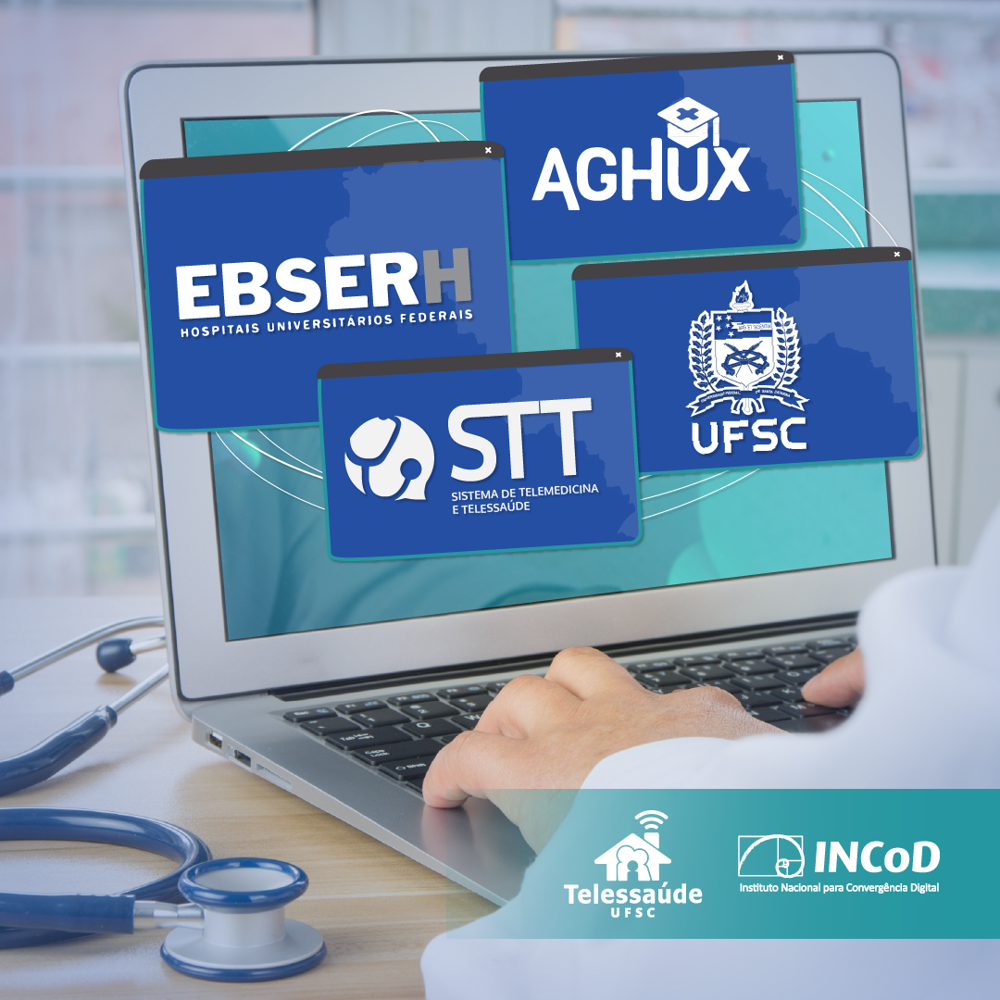

Inscreva-se
na Newsletter
Toda a infraestrutura do STT foi desenvolvida em uma universidade pública, pensando na realidade do SUS e brasileira.

Toda a infraestrutura do STT foi desenvolvida em uma universidade pública, pensando na realidade do SUS e brasileira.